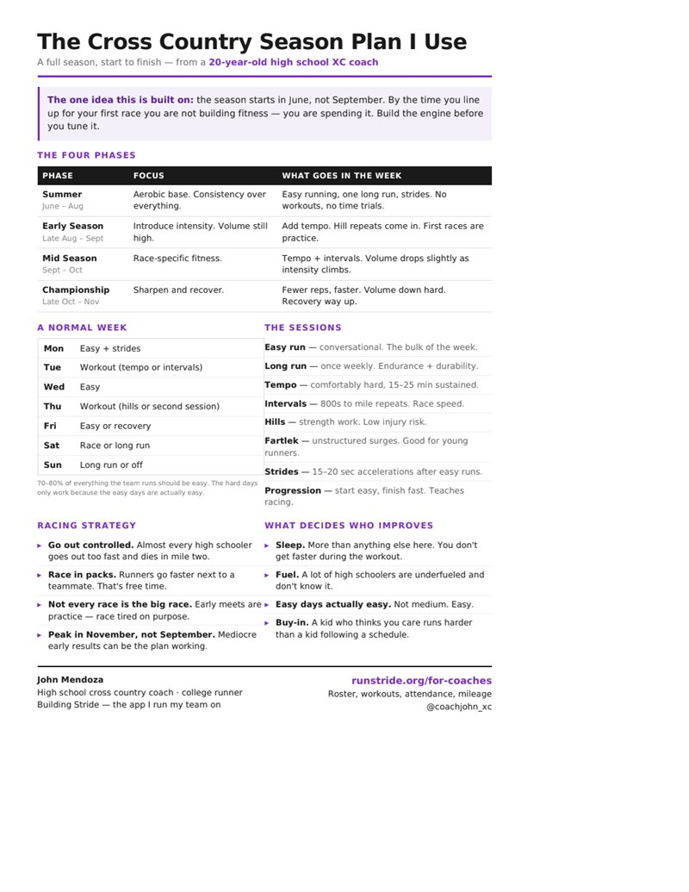

Here’s your season plan.
The full structure I use to plan a cross country season — phases, weekly schedule, workouts, and racing strategy.
Download the PDF
I built the app I run my team on.
Stride handles the roster, workouts, attendance, and mileage tracking for my high school cross country team. If you coach, you can run yours on it too.
See Stride for coaches